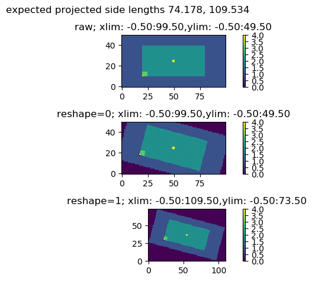
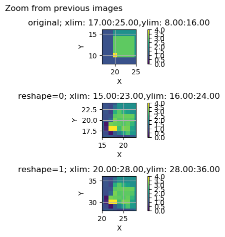
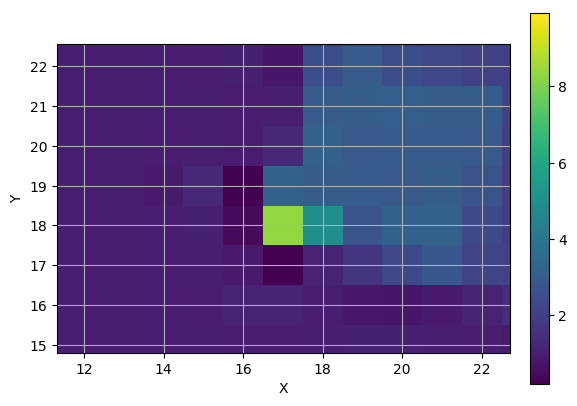
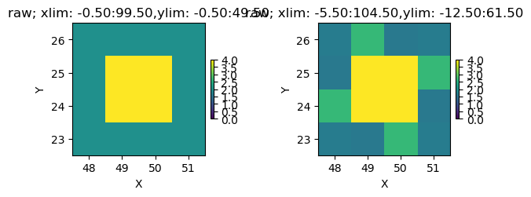
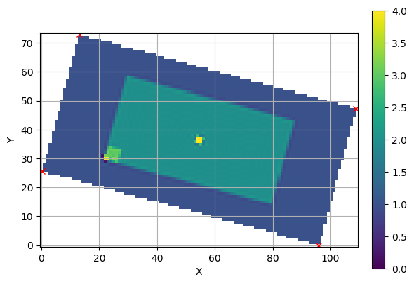
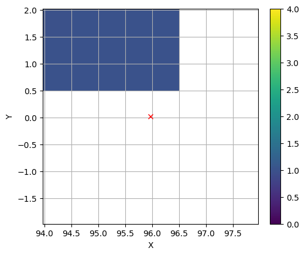
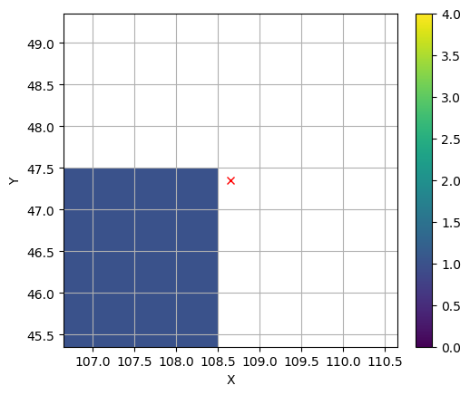
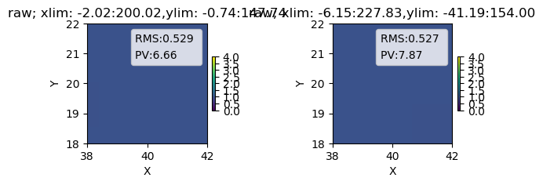
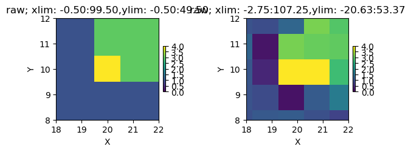

# tests for points routines# 2018/12/11 from test documentation for points module,# most is removed. This investigates rotation of 2D arrays in order# to develop correct 2D rotation functions.# original notes (?not sure what was removed and what was not incorporated ever):# sphinx# kernel must be reset and output cleared before use or before running# sphinx (unless you know what you are doing).## TODO# - sphinxuse _build for intermediate files (move to docs\_build)# but save output in docs(or move it there).# - hide parts of code, add doc string above commands.# - save the results in the noteook (this anyway will prevent # future executions, so maybe make a copy or a script to clear output# when sphinx is called).import matplotlib#matplotlib.use('Agg')import matplotlib.pyplot as pltimport numpy as np#from pySurf.points import *import osimport loggingimport pdb
Once deleted, variables cannot be recovered. Proceed (y/[n])? y
The autoreload extension is already loaded. To reload it, use:
%reload_ext autoreload
#avoid the annoying inline figures from IPython.display import displayplt.ioff()
#%qtconsoleplt.close('all')
def test_rotate(a,rotang):"""use ndimage.rotate with different options to rotate a shape clockwise of a given angle with resample flag on and off, compare results. There is no coordinates manipulation. This is needed to understand how to handle axis in implementing rotation in data2D (data with axis). Note that rotation happens on pixels and it is mapped to pixels, so it is always integer.""" plt.close('all') nx,ny = a.shape ax1=plt.subplot(311) plt.imshow(a,origin='lower',interpolation='none');plt.title("raw; xlim: %.2f:%.2f,ylim: %.2f:%.2f"%(plt.xlim()+plt.ylim())) plt.colorbar() ax2=plt.subplot(312) a2=ndimage.rotate(a,rotang,reshape=0) plt.imshow(a2,origin='lower',interpolation='none') plt.title("reshape=0; xlim: %.2f:%.2f,ylim: %.2f:%.2f"% (plt.xlim()+plt.ylim())) plt.colorbar() ax3=plt.subplot(313) a3=ndimage.rotate(a,rotang,reshape=1) plt.imshow(a3,origin='lower',interpolation='none') plt.title("reshape=1; xlim: %.2f:%.2f,ylim: %.2f:%.2f" plt.colorbar() plt.tight_layout(rect=[0,0,1,0.95]) plt.suptitle("expected projected side lengths %.3f, %.3f"%(nx*np.cos(rotang*np.pi/180)+ny*np.sin(15*np.pi/180),ny*np.cos(rotang*np.pi/180)+nx*np.sin(rotang*np.pi/180)))return ax1,ax2,ax3
Use scipy.ndimage.interpolation.rotate with different options. Original data (top) is a rectangle of 2’s (green) in a rectangle of 1’s (blue). When image is rotated, 0 is used as fill value (can be set with parameter cval) for points out of the original image. reshape controls if the rotated data are cropped after rotation to match original range (reshape = False).
A small square of 3’s (yellow) is inserted at coordinates [10:15,20:25] to identify axis orientation by marking the corner closer to 0 in x and y (imshow must be called with origin=‘lower’ to orient axis as cartesian, and also to put axis limits in increasing order). Four central pixels are marked with a value of 10, as well as the single point at 20,10.
This is automatically handled in pySurf.data2D functions.
#build test arraynx,ny=100,50a=np.ones(nx*ny).reshape((ny,nx))a[10:-10,20:-20]=2a[10:15,20:25]=3a[10,20]=10a[(ny//2-1):(ny//2+1),(nx//2-1):(nx//2+1)]=10rotang=15# rotation angle in degreesaxes=test_rotate(a,rotang)for ax in axes: plt.sca(ax) plt.clim([0,4])display(plt.gcf())

Regarding the lateral sampling, reshape = False keeps same number of points (and same sampling). reshape = True increases the number of points to cover the entire rotated data.
print("shape of a:",a.shape)print("shapes of images data in figure:")for ax in axes: plt.sca(ax)print(ax.images[0].get_size())
shape of a: (50, 100)
shapes of images data in figure:
(50, 100)
(50, 100)
(74, 110)
ax1,ax2,ax3=axesa1,a2,a3=[ax.images[0].get_array() for ax in axes]
Reasonably, both methods should preserve We can verify how well they maintain pixel size. The single corner is marked with the out of range value of 10, that spreads to nearby pixel in interpolation.
plt.close('all')
plt.figure()ax1=plt.subplot(311)plot_data(a1,vmin=0,vmax=4)ax1.set_xlim([17,25])ax1.set_ylim([8,16])plt.title("original; xlim: %.2f:%.2f,ylim: %.2f:%.2f"%(plt.xlim()+plt.ylim()))plt.grid(1)ax2=plt.subplot(312)plot_data(a2,vmin=0,vmax=4)ax2.set_xlim([15,23])ax2.set_ylim([16,24])plt.title("reshape=0; xlim: %.2f:%.2f,ylim: %.2f:%.2f"%(plt.xlim()+plt.ylim()))plt.grid(1)ax3=plt.subplot(313)plot_data(a3,vmin=0,vmax=4)ax3.set_xlim([20,28])ax3.set_ylim([28,36])plt.title("reshape=1; xlim: %.2f:%.2f,ylim: %.2f:%.2f"%(plt.xlim()+plt.ylim()))plt.grid(1)plt.tight_layout(rect=[0,0,1,0.95])#plt.suptitle("expected projected side lengths %.3f, %.3f"%(nx*np.cos(rotang*np.pi/180)+ny*np.sin(15*np.pi/180),ny*np.cos(rotang*np.pi/180)+nx*np.sin(rotang*np.pi/180)))plt.suptitle("Zoom from previous images")plt.show()display(plt.gcf())

It was seen that sampling is preserved very well, this also reasonably maintains the amount of information, since density of information is maintained.
The rotated image has an integer number of pixels, that doesn’t match perfectly the non-integer positions of the rotated pixels (including corners). This can be taken care with interpolation, however it also poses some doubt about lateral registration. Notice that it is not easy to intuitively define the rotation center, most simply corresponds to a rotation about the center followed by x and y translations to bring the corners to 0. The ambiguity is in how the non-integer rotated coordinates are mapped to array indices: How does for example an interval of 109.534 (projected distance between rotated corners) maps to an integer distance of 109 pixels? Is it centered (accurate for center of rotation at array center) or aligned to the left?
Is the center calculated from min and max or from all four corners or from all pixels?
Step by step rotate function
These are the functions in pySurf that can be useful.
Use rotate_points as well tested reference:
from pySurf.affine2D import rotate_points, find_affine, rototrans_funcprint(rotate_points.__doc__,'\n---\n')print(find_affine.__doc__,'\n---\n')print(rototrans_func.__doc__)
returns rotated coordinates of 2D point(s) x ([Npoints x 2]) about a center with anticlockwise angle theta in rad. If 3D points are passed, z coordinate is maintained.
---
Return a function that can transform points from the first system to the second.
if pars is set to a list, append the matrix A of the transformation, that can be applied to a vector x with:
unpad(np.dot(pad(x), A))
markers1 and markers2 are sets of points in format [Npoints, Ndim]. Transformation matrix A is [Ndim+1 x Ndim+1].
http://stackoverflow.com/questions/20546182/how-to-perform-coordinates-affine-transformation-using-python-part-2
---
return a function that rotate by theta about center THEN translate by offset
#try to deal with x and y#establish data coordinates if not providedif x isNone: x=np.arange(data.shape[1],dtype=float)if y isNone: y=np.arange(data.shape[0],dtype=float)corners=list(itertools.product((x[0],x[-1]),(y[0],y[-1]))) xc,yc=span(corners,axis=0).mean(axis=0) #center in data coordinatesif center isNone: #rotation center center=(xc,yc)step=x[1]-x[0],y[1]-y[0] #this is kept constant with rotation
x3=np.arange(a3.shape[1],dtype=float)y3=np.arange(a3.shape[0],dtype=float)corners3=list(product((x3[0],x3[-1]),(y3[0],y3[-1])))xc3,yc3=span(corners3,axis=0).mean(axis=0)print("center of rotated image pixel index: \n",xc3,yc3)
center of rotated image pixel index:
54.5 36.5
#reproduces rotate_data#basic case: default rotate about xc,ycdata=ax=Noney=Noneargs=[]kwargs={}fill_value=np.nanang=15center=None#(xc,yc)plt.clf()#------------------#establish data coordinates if not providedif x isNone: x=np.arange(data.shape[1],dtype=float)if y isNone: y=np.arange(data.shape[0],dtype=float)corners=list(itertools.product((x[0],x[-1]),(y[0],y[-1]))) xc,yc=span(corners,axis=0).mean(axis=0) #center of data in data coordinatesif center isNone: #rotation center center=(xc,yc) step=x[1]-x[0],y[1]-y[0] #this is kept constant with rotation#------------------a3=ndimage.rotate(data,ang,reshape=1,cval=fill_value,*args,**kwargs)x3=np.arange(a3.shape[1],dtype=float)*step[0]y3=np.arange(a3.shape[0],dtype=float)*step[1]#this is center of integer indices of rotated data, different from float center# of rotated corner span (can be calculated with matrix, see ipynb notebookcorners3=list(itertools.product((x3[0],x3[-1]),(y3[0],y3[-1])))xc3,yc3=span(corners3,axis=0).mean(axis=0)x0,y0=np.matmul(([[np.cos(th),np.sin(th)],[-np.sin(th),np.cos(th)]]),(np.array([xc,yc])-center)).T#x0,y0=rotate_points((np.array([xc,yc])-center),ang*np.pi/180.,center=center) #rotation center transformed using pointsprint(x0,y0)xout=x3-xc3+x0+center[0] #(x3-xc3)*step[0]+center[0]yout=y3-yc3+y0+center[1] #(y3-yc3)*step[1]+center[1]#------------------ print("center data original: ",xc,yc)print("center image coord rotated: ",xc3,yc3)print("corners:",corners)ct=rotate_points(corners,-ang*np.pi/180.,center=center) #corners transformed using pointsprint("rotated:",np.around(ct,decimals=2))xct,yct=span(ct,axis=0).mean(axis=0)print("center of rotated corners: ",xct,yct)#d2,x2,y2=rotate_data(a,x,y,ang=15,center=center)plt.clf()plot_data(a3,xout,yout) plt.plot(center[0],center[1],'xr')plt.plot(xc3,yc3,'+r')plt.plot(x0,y0,'sb')plt.show()display(plt.gcf())
0.0 0.0
center data original: 49.5 24.5
center image coord rotated: 54.5 36.5
corners: [(0.0, 0.0), (0.0, 49.0), (99.0, 0.0), (99.0, 49.0)]
rotated: [[ -4.65 13.65]
[ 8.03 60.98]
[ 90.97 -11.98]
[103.65 35.35]]
center of rotated corners: 49.5 24.5
Note here pixels are centered on integer coordinates (pixel index).
display(plt.gcf())

data=ax=Noney=Noneargs=[]kwargs={}fill_value=np.nanang=15center=(20,10)plt.clf()#------------------#establish data coordinates if not providedif x isNone: x=np.arange(data.shape[1],dtype=float)if y isNone: y=np.arange(data.shape[0],dtype=float)corners=list(itertools.product((x[0],x[-1]),(y[0],y[-1]))) xc,yc=span(corners,axis=0).mean(axis=0) #center of data in data coordinatesif center isNone: #rotation center center=(xc,yc) step=x[1]-x[0],y[1]-y[0] #this is kept constant with rotation#------------------a3=ndimage.rotate(data,ang,reshape=1,cval=fill_value,*args,**kwargs)x3=np.arange(a3.shape[1],dtype=float)*step[0]y3=np.arange(a3.shape[0],dtype=float)*step[1]#this is center of integer indices of rotated data, different from float center# of rotated corner span (can be calculated with matrix, see ipynb notebookcorners3=list(itertools.product((x3[0],x3[-1]),(y3[0],y3[-1])))xc3,yc3=span(corners3,axis=0).mean(axis=0)th=ang/180*np.pi#rotate distance vector of rotation center from scipy center x0,y0=np.matmul(([[np.cos(th),np.sin(th)],[-np.sin(th),np.cos(th)]]),(np.array([xc,yc])-center)).T#x0,y0=rotate_points((np.array([xc,yc])-center),ang*np.pi/180.,center=center) #rotation center transformed using pointsprint(x3,(xc3),x0,center[0])xout=x3-(xc3)+x0+center[0] #(x3-xc3)*step[0]+center[0]yout=y3-(yc3)+y0+center[1] #(y3-yc3)*step[1]+center[1]#------------------ print("center data original: ",xc,yc)print("center image coord rotated: ",xc3,yc3)print("corners:",corners)ct=rotate_points(corners,-ang*np.pi/180.,center=center) #corners transformed using pointsprint("rotated:",np.around(ct,decimals=2))xct,yct=span(ct,axis=0).mean(axis=0)print("center of rotated corners: ",xct,yct)#d2,x2,y2=rotate_data(a,x,y,ang=15,center=center)plt.clf()plot_data(a3,xout,yout) plt.plot(center[0],center[1],'xr')plt.plot(xc3,yc3,'+r')plt.plot(x0,y0,'sb')plt.show()display(plt.gcf())
#establish data coordinates if not providedif x isNone: x=np.arange(data.shape[1],dtype=float)if y isNone: y=np.arange(data.shape[0],dtype=float)corners=list(itertools.product((x[0],x[-1]),(y[0],y[-1]))) xc,yc=span(corners,axis=0).mean(axis=0) #center of data in data coordinatesif center isNone: #rotation center center=(xc,yc) step=x[1]-x[0],y[1]-y[0] #this is kept constant with rotation
a3=ndimage.rotate(data,ang,reshape=1,cval=fill_value,*args,**kwargs)x3=np.arange(a3.shape[1],dtype=float)y3=np.arange(a3.shape[0],dtype=float)#this is center of integer indices of rotated data, different from float center# of rotated corner span (can be calculated with matrix, see ipynb notebookcorners3=list(itertools.product((x3[0],x3[-1]),(y3[0],y3[-1])))xc3,yc3=span(corners3,axis=0).mean(axis=0)th=ang/180*np.pix0,y0=np.matmul(([[np.cos(th),np.sin(th)],[-np.sin(th),np.cos(th)]]),(np.array([xc,yc])-center)).T#x0,y0=rotate_points((np.array([xc,yc])-center),ang*np.pi/180.,center=center) #rotation center transformed using pointsprint(x0,y0)xout=x3-xc3+x0+center[0] #(x3-xc3)*step[0]+center[0]yout=y3-yc3+y0+center[1] #(y3-yc3)*step[1]+center[1]ct=rotate_points(corners,-ang*np.pi/180.,center=center) #corners transformed using points
for ax in plt.gcf().axes[::2]: ax.set_xlim((xc-dx,xc+dx)) ax.set_ylim((yc-dy,yc+dy))display(plt.gcf())

"""# use ndimage to rotate data and recalculate coordinate #this assumes same center and non-integer coordinates are interpolated on integer cordinates # (in units of steps) # default cval = 0.0 a3=ndimage.rotate(data,ang,reshape=1)#coordinates of rotated matplotlib center analytically calculated from original#in index coordinates of rotated data. Same as measure span between corners. th=ang*np.pi/180xc3,yc3=np.matmul(np.array([[np.cos(th),np.sin(th)], [np.sin(th),np.cos(th)]]),np.array([xc,yc]))#rotated matplotlib coordinates as indicesx3=np.arange(a3.shape[1],dtype=float)y3=np.arange(a3.shape[0],dtype=float)#output coordinatesxout=x3*step-xc3+xcyout=y3*step-yc3+ycprint("cane")""";
Plot rotated corners over data. Rotation is about central point (middle point of coordinates span).
Corners are rotated with rotate_points, data with ndimage.rotate. corners coordinates are offset by -xct+xc3 (and y..) to match matplotlib index, where xct is original center, and xc3 center of rotated data in plotted data index space:
plt.figure('match_corners')ct[:,0]=ct[:,0]ct[:,1]=ct[:,1]plt.clf()plot_data(a3,vmin=0,vmax=4)plt.plot(ct[:,0]-xct+xc3,ct[:,1]-yct+yc3,'xr') #translate ct to common centerax=plt.gca()plt.grid(1)display(plt.gcf())

#attempt to make ticks thick on cell borders and thin on points# fails because major and minor grid overlap and thicker line prevails#ax.set_xticks(np.arange(0, 101, 20))#ax.set_xticks(minor_ticks, minor=True)#ax.set_yticks(np.arange(0, 101, 10))#ax.set_yticks(minor_ticks, minor=True)# And a corresponding grid#ax.grid(which='both')# Or if you want different settings for the grids:#ax.grid(which='minor', alpha=0.2)#ax.grid(which='major', alpha=0.5)#ax.set_xticks(np.arange(0, 101, 1))#ax.set_yticks(np.arange(0, 101, 1))#ax.set_xticks(np.arange(0, 101, 0.5),minor=True)#ax.set_yticks(np.arange(0, 101, 0.5),minor=True)# Or if you want different settings for the grids:#ax.grid(which='minor', alpha=0.5, linestyle='solid', lw =2)#ax.grid(which='major', alpha=0.1, linestyle='dotted')
dx,dy=2,2for c in ct: plt.xlim([c[0]-dx-xct+xc3,c[0]+dx-xct+xc3]) plt.ylim([c[1]-dy-yct+yc3,c[1]+dy-yct+yc3]) plt.draw() display(plt.gcf())


from itertools import product
# use ndimage to rotate data and recalculate coordinate
#this assumes same center and non-integer coordinates are interpolated on integer cordinates
# (in units of steps)
# default cval = 0.0
a3=ndimage.rotate(data,ang,reshape=1,cval=fill_value,*args,**kwargs)
x3=np.arange(a3.shape[1],dtype=float)
y3=np.arange(a3.shape[0],dtype=float)
#this is center of integer indices of rotated data, different from float center
# of rotated corner span (can be calculated with matrix, see ipynb notebook
corners3=list(itertools.product((x3[0],x3[-1]),(y3[0],y3[-1])))
xc3,yc3=span(corners3,axis=0).mean(axis=0)
xout=(x3-xc3)*step[0]-xc+center[0]
yout=(y3-yc3)*step[1]-yc+center[1]
plt.close('all')def test_rotate_points(a,x=None,y=None,nozoom=False,dx=2,dy=2,center=None,scatter=False,*args,**kwargs):#dx,dy=2,2 #margin for zoom crange=[0,4]#establish data coordinates if not providedif x isNone: x=np.arange(data.shape[1],dtype=float)if y isNone: y=np.arange(data.shape[0],dtype=float) corners=list(itertools.product((x[0],x[-1]),(y[0],y[-1]))) xc,yc=span(corners,axis=0).mean(axis=0) #center of data in data coordinatesif center isNone: #rotation center center=(xc,yc) p=matrix_to_points2(a,x,y) theta=-kwargs.pop('ang',0)/180*np.pi p2=rotate_points(p,theta,center=center,*args,**kwargs)#this assumes same center and non-integer coordinates are interpolated on integer cordinates # (in units of steps) #xout,yout=points_find_grid(p2,result='grid',steps=(0,0))#d2,x2,y2=points_autoresample(p2,steps=(0,0))#d2,x2,y2=rotate_data(a,x,y,*args,**kwargs)#plot original data plt.figure() plt.subplot(121) plot_points(p,scatter=scatter) plt.title("raw; xlim: %.2f:%.2f,ylim: %.2f:%.2f"%(plt.xlim()+plt.ylim())) plt.clim(*crange) plt.plot(center[0],center[1],'xr') plt.grid(1)#plot rotated data plt.subplot(122) plot_points(p2,scatter=scatter) plt.title("raw; xlim: %.2f:%.2f,ylim: %.2f:%.2f"%(plt.xlim()+plt.ylim())) plt.clim(*crange) plt.plot(center[0],center[1],'xr') plt.grid(1) plt.tight_layout() display(plt.gcf()) ifnot nozoom:#zoom on rotation center xc,yc= kwargs.get('center',[span(p2[0,:]).mean(),span(p2[1,:]).mean()])for ax in plt.gcf().axes[::2]: plt.sca(ax) plt.xlim((center[0]-dx,center[0]+dx)) plt.ylim((center[1]-dy,center[1]+dy)) plt.plot(center[0],center[1],'xr') plt.grid(1)#ax.set_xlim((xc-dx,xc+dx))#ax.set_ylim((yc-dy,yc+dy)) display(plt.gcf())
def test_rotate_center(a,x=None,y=None,nozoom=False,dx=2,dy=2,center=None,*args,**kwargs):#establish data coordinates if not providedif x isNone: x=np.arange(data.shape[1],dtype=float)if y isNone: y=np.arange(data.shape[0],dtype=float) corners=list(itertools.product((x[0],x[-1]),(y[0],y[-1]))) xc,yc=span(corners,axis=0).mean(axis=0) #center of data in data coordinatesif center isNone: #rotation center center=(xc,yc) #dx,dy=2,2 #margin for zoom crange=[0,4] d2,x2,y2=rotate_data(a,x,y,center=center,*args,**kwargs)#plot original data plt.figure() plt.subplot(121) plot_data(a,x,y) plt.title("raw; xlim: %.2f:%.2f,ylim: %.2f:%.2f"%(plt.xlim()+plt.ylim())) plt.clim(*crange) plt.plot(center[0],center[1],'xr') plt.grid(1)#plot rotated data plt.subplot(122) plot_data(d2,x2,y2) plt.title("raw; xlim: %.2f:%.2f,ylim: %.2f:%.2f"%(plt.xlim()+plt.ylim())) plt.clim(*crange) plt.plot(center[0],center[1],'xr') plt.grid(1) plt.tight_layout() display(plt.gcf()) ifnot nozoom:#zoom on rotation center xc,yc= kwargs.get('center',[span(x2).mean(),span(y2).mean()])for ax in plt.gcf().axes[::2]: plt.sca(ax) plt.xlim((center[0]-dx,center[0]+dx)) plt.ylim((center[1]-dy,center[1]+dy)) plt.plot(center[0],center[1],'xr') plt.grid(1)#ax.set_xlim((xc-dx,xc+dx))#ax.set_ylim((yc-dy,yc+dy)) display(plt.gcf())
# basic test, rotate about 20,10test_rotate_points(a,x,y,ang=15,center=(20,10),dx=2,dy=2) #baselinetest_rotate_center(a,ang=15.,center=(20,10),dx=2,dy=2)
C:\Program Files (x86)\Microsoft Visual Studio\Shared\Anaconda3_64\lib\site-packages\matplotlib\pyplot.py:537: RuntimeWarning: More than 20 figures have been opened. Figures created through the pyplot interface (`matplotlib.pyplot.figure`) are retained until explicitly closed and may consume too much memory. (To control this warning, see the rcParam `figure.max_open_warning`).
max_open_warning, RuntimeWarning)
resampling...
resampling...
resampling...
resampling...

32.247688029514066 6.370762650667128

92.74314964084647 40.8895854062567
plt.figure()ax1=plt.subplot(311)plot_data(a1,vmin=0,vmax=4)#ax1.set_xlim([17,25])#ax1.set_ylim([8,16])plt.title("original; xlim: %.2f:%.2f,ylim: %.2f:%.2f"%(plt.xlim()+plt.ylim()))plt.grid(1)ax2=plt.subplot(312)plot_data(*rotate_data(a,x,y,ang=15,center=(20,10)),vmin=0,vmax=4)#ax2.set_xlim([15,23])#ax2.set_ylim([16,24])plt.title("reshape=0; xlim: %.2f:%.2f,ylim: %.2f:%.2f"%(plt.xlim()+plt.ylim()))plt.grid(1)ax3=plt.subplot(313)plot_data(*rotate_data(a,x,y,ang=15,center=(20,10),usepoints=True),vmin=0,vmax=4)#ax3.set_xlim([20,28])#ax3.set_ylim([28,36])plt.title("reshape=1; xlim: %.2f:%.2f,ylim: %.2f:%.2f"%(plt.xlim()+plt.ylim()))plt.grid(1)plt.tight_layout(rect=[0,0,1,0.95])#plt.suptitle("expected projected side lengths %.3f, %.3f"%(nx*np.cos(rotang*np.pi/180)+ny*np.sin(15*np.pi/180),ny*np.cos(rotang*np.pi/180)+nx*np.sin(rotang*np.pi/180)))plt.suptitle("Zoom from previous images")plt.show()display(plt.gcf())
#development test of rotate_data coordinates mappingcenter=Nonedata=aang=15xc,yc=span(corners,axis=0).mean(axis=0)if center isNone: center=(xc,yc)step=x[1]-x[0],y[1]-y[0] #this is kept constant with rotation# use ndimage to rotate data and recalculate coordinate #this assumes same center and non-integer coordinates are interpolated on integer cordinates # (in units of steps) # default cval = 0.0 a3=ndimage.rotate(data,ang,reshape=1)#coordinates of rotated matplotlib center analytically calculated from original xc3,yc3=np.matmul(np.array([[np.cos(th),np.sin(th)], [np.sin(th),np.cos(th)]]),np.array([xc,yc]))#rotated matplotlib coordinates as indicesx3=np.arange(a3.shape[1],dtype=float)y3=np.arange(a3.shape[0],dtype=float)#it would be better to obtain those by transformation of original corners and rescaling with steps as#done somewhere in notebook.#corners3=list(itertools.product((x3[0],x3[-1]),(y3[0],y3[-1])))#xc3,yc3=span(corners3,axis=0).mean(axis=1)xout=(x3-xc3)*step[0]+xcyout=(y3-yc3)*step[1]+ycprint("xout,yout:" ,xout,yout)th=ang/180*np.piprint ("Center from span of rotated corners:", xc3,yc3)# note: np.dstack([a,b]).squeeze() with a and b 2el crashes kernelprint("center of mpl rotated data", span((np.matrix([[np.cos(th),np.sin(th)],[np.sin(th),np.cos(th)]])* np.asarray(corners).T).T,axis=0)[1]/2)
infolder=r'input_data\profilometer\04_test_directions'#outfolder=r'test\profilometer_scans\04_test_directions_output'outfolder=r'results\test_points'testfiles=['05_xysurf_pp_Intensity.txt','06_xysurf_pm_Intensity.txt','07_xysurf_mp_Intensity.txt','08_xysurf_mm_Intensity.txt','09_yxsurf_pp_Intensity.txt','10_yxsurf_pm_Intensity.txt','11_yxsurf_mp_Intensity.txt','12_yxsurf_mm_Intensity.txt']#definition for subplotsn=len(testfiles)a = np.floor(n**0.5).astype(int) #nr of plots on horizontalb = np.ceil(1.*n/a).astype(int) #nr of plots on vertical
rotate and rebin
pts2=rotate_points(pts,45*np.pi/180) #rotate 45 degreespts3=rebin_points(pts2,bins=nbins)fig=plt.figure(8)plt.clf()plt.suptitle('Rotate and rebin test')plt.subplot(131)plt.title('Original, scatter plot')plot_points(pts,scatter=1,aspect='equal')ax1=plt.gca()plt.subplot(132,sharex=ax1,sharey=ax1)plt.title('Rotated')plot_points(pts2,scatter=1,aspect='equal')plt.subplot(133,sharex=ax1,sharey=ax1)plt.title('Rotated and rebinned, scatterplot')plot_points(pts3,scatter=1,aspect='equal')plt.savefig(os.path.join(outfolder,'08_rotateandrebin.png'))display(plt.gcf())
plt.close('all')
import numpy as npimport matplotlib.pyplot as pltfrom scipy import miscfrom scipy.ndimage import rotatedata_orig = misc.face()x0,y0 =580,300# left eye; (xrot,yrot) should point theredef rot(image, xy, angle): im_rot = rotate(image,angle) org_center = (np.array(image.shape[:2][::-1])-1)/2. rot_center = (np.array(im_rot.shape[:2][::-1])-1)/2. org = xy-org_center a = np.deg2rad(angle) new = np.array([org[0]*np.cos(a) + org[1]*np.sin(a),-org[0]*np.sin(a) + org[1]*np.cos(a) ])return im_rot, new+rot_centerfig,axes = plt.subplots(2,2)axes[0,0].imshow(data_orig,origin='lower')axes[0,0].scatter(x0,y0,c="r" )axes[0,0].set_title("original")for i, angle inenumerate([66,-32,90]): data_rot, (x1,y1) = rot(data_orig, np.array([x0,y0]), angle) axes.flatten()[i+1].imshow(data_rot,origin='lower') axes.flatten()[i+1].scatter(x1,y1,c="r" ) axes.flatten()[i+1].set_title("Rotation: {}deg".format(angle))plt.show()display(plt.gcf())
#PIL rotate
https://pillow.readthedocs.io/en/3.1.x/reference/Image.html
Image.rotate(angle, resample=0, expand=0)
Returns a rotated copy of this image. This method returns a copy of this image, rotated the given number of degrees counter clockwise around its centre.
Parameters:
angle – In degrees counter clockwise.
resample – An optional resampling filter. This can be one of PIL.Image.NEAREST (use nearest neighbour), PIL.Image.BILINEAR (linear interpolation in a 2x2 environment), or PIL.Image.BICUBIC (cubic spline interpolation in a 4x4 environment). If omitted, or if the image has mode “1” or “P”, it is set PIL.Image.NEAREST.
expand – Optional expansion flag. If true, expands the output image to make it large enough to hold the entire rotated image. If false or omitted, make the output image the same size as the input image.
Returns:
An Image object.
SciPy’s rotate defaults to cubic spline interpolation, while PIL’s defaults to nearest neighbor. If you add the keyword parameter order=0 to SciPy, it should speed up considerably, and if you add filter=PIL.Image.BICUBIC (which is equivalent to filter=3) to PIL it will slow down. It is always a good idea to read the docs: docs.scipy.org/doc/scipy/reference/generated/… and pythonware.com/library/pil/handbook/image.htm